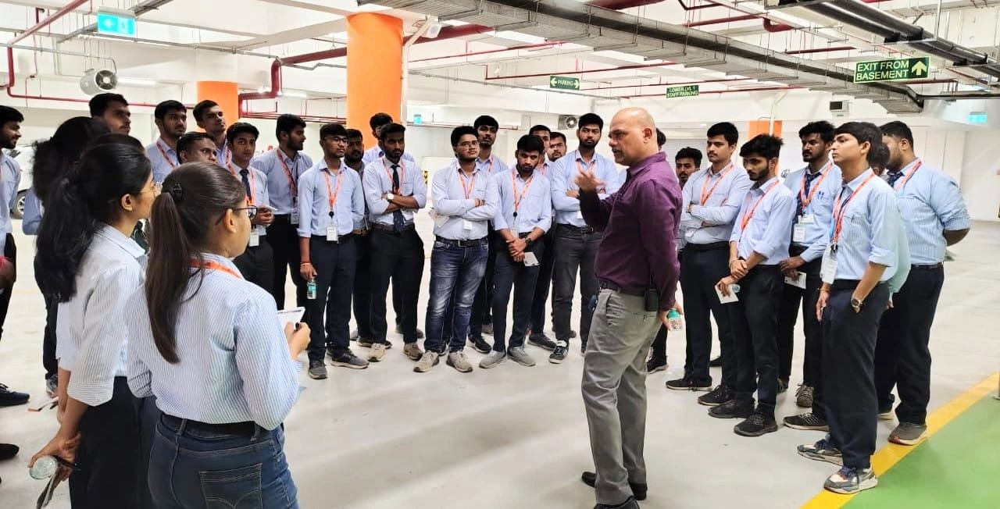
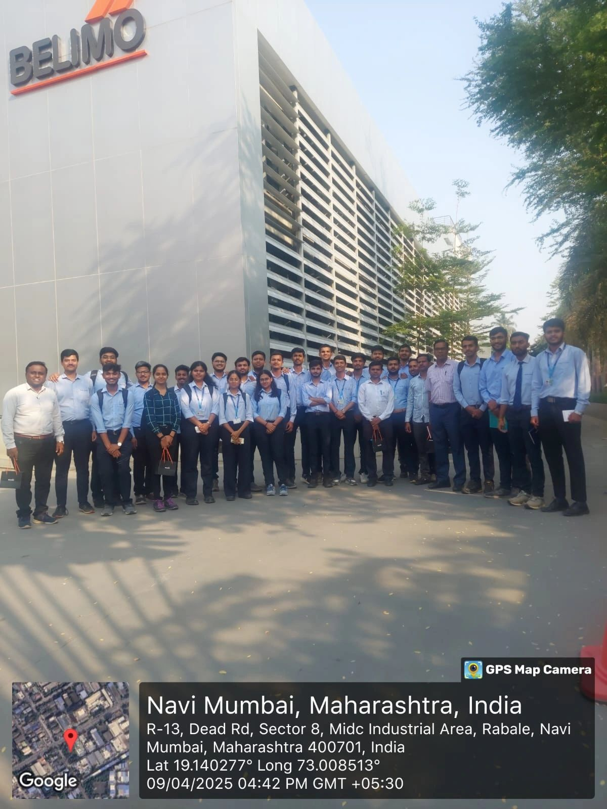
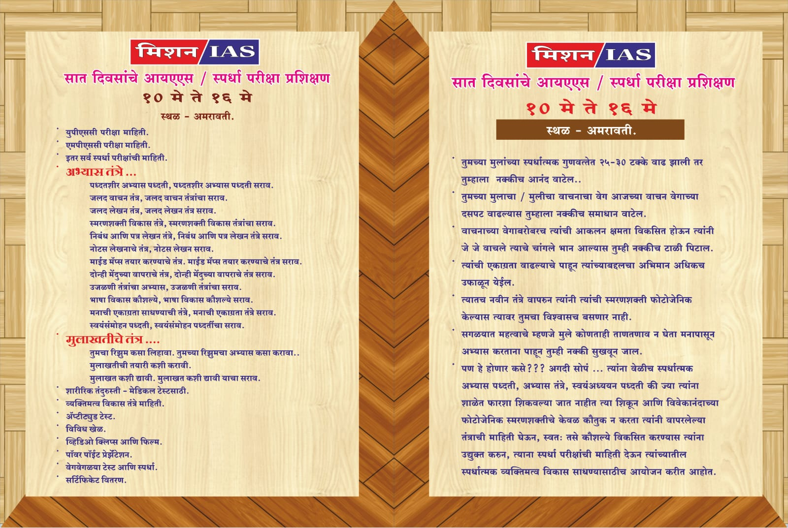
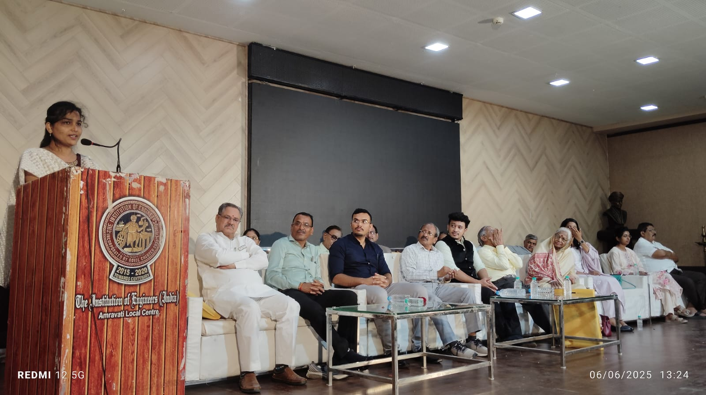
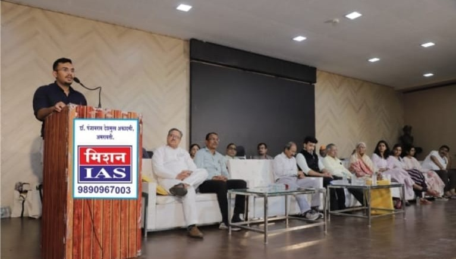

Why Education Matters
Education is the cornerstone of a progressive society. It empowers individuals to break the cycle of poverty, improves health outcomes, and boosts economic growth. Children who receive quality education are more likely to become responsible citizens and contribute meaningfully to their communities. In rural India, where educational infrastructure may be limited, our NGO acts as a bridge, bringing resources and hope to those most in need.
Education fosters creativity, critical thinking, and the skills necessary for meaningful participation in society. It not only helps children imagine a better world, but equips them to create it. For families in underserved communities, education becomes the ladder that elevates them from generations of hardship into hope and opportunity.
Over 35 million children in India aged 6–14 years do not attend school. We are changing this narrative by working in the most neglected areas to build strong educational foundations. Every school built, every child taught, is a step closer to eradicating illiteracy.
Our approach goes beyond classrooms. We instill values, self-respect, and confidence in every student we reach. Because when a child believes in themselves, their potential becomes limitless.
Our Educational Initiatives
We support several government programs in association with trusted partners like Y4D, CRY, and MS. Our goal is to ensure every child has access to quality education and a brighter tomorrow.
- Sarva Shiksha Abhiyan (SSA)
- Right to Education (RTE) Act
- National Programme for Education of Girls at Elementary Level (NPEGEL)
- Beti Bachao, Beti Padhao (BBBP)
- Rashtriya Madhyamik Shiksha Abhiyan (RMSA)
- National Scheme of Incentives to Girls for Secondary Education
- Samagra Shiksha
- CBSE Udaan Program
- Kasturba Gandhi Balika Vidyalaya (KGBV)
- Sukanya Samriddhi Yojana
Our partnerships with these flagship programs enable us to complement governmental efforts with local outreach, making sure the last-mile access to education is not left behind. We also advocate for inclusive curriculum, modern learning methods, and gender-sensitive teaching practices.
We also conduct policy awareness campaigns in communities so parents understand their children's rights and entitlements under schemes like RTE and Samagra Shiksha. Awareness is the first step to empowerment.
Volunteer & Community Involvement
Our strength lies in our people. Thousands of volunteers across states contribute time, skills, and compassion to mentor students, run libraries, conduct workshops, and mobilize local support. These community champions are the beating heart of our education movement.
We offer structured volunteer programs with training, resources, and certificates, enabling passionate citizens to be real changemakers in the field of education. If you can spare time, you can spark a transformation.
Transparency and Impact
Transparency is central to our operations. Every donation is tracked, and our results are publicly reported each year. We've helped over 50,000 students since inception, built 120+ classrooms, and distributed 150,000+ learning kits to children in need.
Our approach is rooted in sustainability. We don't just donate—we build capacity in schools, train teachers, and support long-term infrastructure that outlasts our presence and fuels independent growth.
Training Camps
We organize regular workshops and training camps on skill development, computer literacy, and vocational training to empower children and young adults. These camps not only equip participants with job-ready skills but also boost self-esteem and community involvement.
Beyond technical knowledge, our programs foster soft skills, team-building exercises, leadership modules, and entrepreneurial thinking to prepare youth for holistic development in the competitive world.



Education for All
We strive to make inclusive, equitable education accessible from preschool to senior secondary levels for every child regardless of background. Our outreach programs focus on tribal areas, remote villages, and urban slums where dropout rates are highest and support is most needed.
By identifying barriers such as lack of transport, parental illiteracy, and early child marriage, we actively intervene with localized solutions and door-to-door engagement to bring more children into classrooms and keep them there.
Financial Support for Education
Through scholarships, tuition fee reimbursements, and provision of educational materials, we ensure that no child is denied learning due to financial hardships. We also assist college students with laptops, hostel aid, and exam preparation coaching.
Our micro-grant programs further support families in crisis, ensuring children stay enrolled in school. Corporate sponsorships and crowdfunding initiatives also help us scale our financial aid outreach to hundreds of students each year.
Mentoring Programs
We connect students with mentors who help build essential life skills and guide them in career development, boosting their confidence and ambition. Our mentorship includes one-on-one sessions, webinars with professionals, and goal-setting workshops.
Mentors come from diverse industries and include alumni of our programs, creating a full-circle community of learners and leaders. These relationships often become lifelong support systems for our students, inspiring them to give back and mentor others.



Empowering Through Education
✏️ Education is the most powerful tool for a bright future, and the foundation is supporting underprivileged children through:
- Educational aid
- Scholarships
- Digital learning programs
üì¶ Fostering a learning culture in rural and remote areas:
- Distribution of school supplies
- Career guidance
- Skill development training
üëß Encouraging girls' education through dedicated initiatives:
Reinforcing the mission of “Beti Bachao, Beti Padhao” (Save the Daughter, Educate the Daughter).
These combined efforts form the heart of our mission — creating a future where every child, regardless of gender or background, has the opportunity to learn, grow, and shine. Through compassionate guidance, innovative programs, and shared hope, we strive for a world where education empowers dreams.